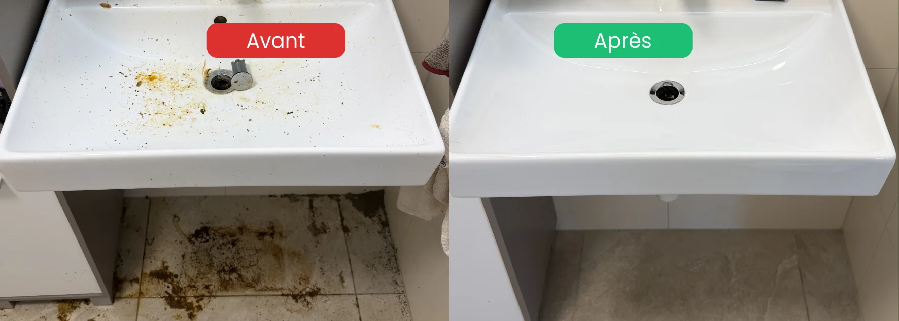

- C'est une situation médicale, pas un choix ni un manque de volonté
- Premiers signes : isolement progressif, refus de visites, négligence d'hygiène, accumulation
- À ne jamais faire : forcer le nettoyage sans l'accord de la personne
- Première démarche : parler au médecin traitant, sans poser de diagnostic vous-même
- Patience essentielle : la confiance se construit sur des semaines, parfois des mois
Qu'est-ce que le syndrome de Diogène
Le syndrome de Diogène est un trouble du comportement décrit pour la première fois en 1966 par les psychiatres MacMillan et Shaw, puis officiellement nommé en 1975 par les gériatres britanniques Clark, Mankikar et Gray. Il se caractérise par quatre éléments cliniques principaux :
- Une négligence extrême de l'hygiène personnelle et du logement
- Un isolement social progressif et un refus des visites
- Une accumulation compulsive d'objets, parfois de déchets (syllogomanie)
- Un déni total de la situation et un refus d'aide
Qui est concerné
D'après les études cliniques, ce syndrome touche majoritairement les personnes âgées de plus de 60 ans, vivant seules, mais il peut concerner tous les âges et toutes les classes sociales. Les femmes sont légèrement plus touchées que les hommes selon certaines études.
Quelques repères importants :
- Il n'est pas lié au niveau d'éducation ou aux ressources financières
- Entre 50 et 80% des personnes concernées présentent une pathologie psychiatrique associée (dépression, schizophrénie, démence fronto-temporale notamment)
- Le syndrome est souvent découvert tardivement, parfois par les voisins ou suite à une intervention sociale
Reconnaître les signes chez un proche
Les premiers signaux apparaissent souvent bien avant la dégradation visible du logement. Ils sont subtils et faciles à minimiser au début.
Signes comportementaux précoces
- Refus progressif de recevoir des visites à domicile
- Excuses systématiques pour éviter qu'on entre dans le logement
- Isolement social croissant, rupture des contacts familiaux
- Négligence visible de l'hygiène personnelle
- Vêtements inadaptés ou portés plusieurs jours d'affilée
Signes liés au logement
- Odeurs anormales depuis la porte d'entrée
- Courrier non ouvert qui s'accumule dans la boîte aux lettres
- Volets fermés en permanence
- Voisins qui signalent des nuisances
- Pannes non réparées (chauffage, éclairage, ascenseur d'immeuble)
Signaux qui doivent vraiment alerter
- Présence d'animaux non soignés
- Nuisibles (rongeurs, insectes) visibles
- Refus catégorique de toute aide médicale ou sociale
- Perte de poids importante
- Changement brutal de comportement après un événement (deuil, perte d'emploi, isolement forcé)

Comprendre les causes possibles
Les causes du syndrome de Diogène sont multiples et souvent combinées. C'est rarement une seule raison qui explique la situation.
| Type de cause | Exemples |
|---|---|
| Pathologies psychiatriques | Dépression sévère, schizophrénie, troubles obsessionnels compulsifs |
| Pathologies neurologiques | Démence (notamment fronto-temporale), maladie d'Alzheimer |
| Chocs émotionnels | Deuil non résolu, séparation, perte d'emploi |
| Fragilités sociales | Isolement progressif, rupture familiale, précarité |
| Addictions | Alcoolisme, dépendances diverses |
| Personnalité prémorbide | Tendance ancienne à la méfiance, à l'entêtement, à l'instabilité émotionnelle |
Cette diversité de causes explique pourquoi chaque situation est unique et pourquoi l'intervention doit toujours être personnalisée, jamais standardisée.
Ce qu'il ne faut absolument pas faire
Face à une situation aussi délicate, les bonnes intentions peuvent causer des dégâts importants. Voici les erreurs les plus graves à éviter.
Ne jamais forcer le nettoyage
C'est l'erreur la plus grave et la plus fréquente. Vider de force le logement d'une personne atteinte du syndrome de Diogène peut provoquer :
- Un traumatisme psychologique majeur
- Une dépression sévère, parfois des idées suicidaires
- Une aggravation du syndrome (réaccumulation rapide après le nettoyage)
- Une perte définitive de confiance envers la famille et les soignants
Les objets accumulés font partie d'une « forteresse protectrice » que la personne a construite autour d'elle. La détruire sans son accord, c'est la laisser sans défense.
Ne pas juger ni étiqueter
Évitez les phrases comme :
- « Tu vis dans un dépotoir »
- « Il faut absolument que tu te ressaisisses »
- « Tu fais le syndrome de Diogène »
- « Pourquoi tu te laisses aller comme ça ? »
Ces mots renforcent la honte et l'isolement, deux moteurs principaux du syndrome.
Ne pas poser un diagnostic vous-même
Seul un médecin peut diagnostiquer. Étiqueter un proche « Diogène » sans avis professionnel, c'est lui coller une étiquette qui peut blesser et fausser la prise en charge.
Comment réagir : les étapes concrètes
Voici une démarche progressive et respectueuse, validée par les approches cliniques recommandées.
Étape 1 : observer et documenter
Sans intervenir, prenez le temps de :
- Noter les signes observés (dates, comportements, état visible du logement si vous y avez accès)
- Identifier les moments de stabilité où la personne accepte le dialogue
- Repérer les personnes-ressources dans son entourage (voisins bienveillants, ancien médecin, ami de longue date)
Étape 2 : alerter un professionnel de santé
C'est la première démarche officielle à entreprendre :
- Médecin traitant : c'est l'interlocuteur central, même si la personne refuse de le voir
- Psychiatre ou psychogériatre : pour les cas plus complexes
- CMS (Centre médico-social) en Vaud et Fribourg : intervention sociale à domicile
- Pro Senectute : pour les personnes âgées
Vous pouvez transmettre vos observations au médecin même sans l'accord de votre proche : le secret médical ne vous empêche pas de signaler des inquiétudes.
Étape 3 : maintenir le lien sans forcer
C'est probablement le plus important. La confiance se construit lentement :
- Visites régulières et courtes, sans projet de nettoyage en tête
- Conversations ordinaires, jamais centrées sur le problème
- Petits gestes de soin : apporter un repas, lire le courrier important ensemble
- Patience absolue : ne pas attendre d'amélioration rapide
Étape 4 : envisager l'intervention médicale et le nettoyage
Quand un cadre médical est en place (suivi régulier, parfois hospitalisation), un nettoyage peut être envisagé, mais toujours en coordination :
- Avec le médecin ou le psychiatre référent
- Avec l'accord ou au minimum la non-opposition de la personne
- Avec une entreprise de nettoyage formée à ces situations particulières
- Sans tout faire d'un coup : nettoyage par étapes pour éviter la décompensation
Quand un nettoyage devient nécessaire, on intervient avec délicatesse
En coordination médicale · Discrétion totale · Sans jugement
Voir le service insalubre & extrême →Le rôle de l'entourage : essentiel mais épuisant
Être proche d'une personne atteinte du syndrome de Diogène est extrêmement éprouvant. Beaucoup de familles s'épuisent dans la durée et ressentent :
- De la culpabilité (« j'aurais dû voir plus tôt »)
- De la honte (« que vont penser les voisins »)
- De la colère (« pourquoi refuse-t-il l'aide ? »)
- Du découragement face au refus répété
- Un épuisement physique et moral
Ces émotions sont normales et partagées par tous les proches confrontés à cette situation. Reconnaître son propre besoin d'aide n'est pas un manque de loyauté envers la personne malade.
FAQ – Syndrome de Diogène d'un proche
Comment savoir si mon proche est atteint du syndrome de Diogène ?
Seul un médecin peut poser un diagnostic. Si vous observez plusieurs signes simultanément (isolement, refus de visites, négligence d'hygiène, accumulation visible, odeurs anormales), parlez-en au médecin traitant. C'est lui qui pourra orienter vers une évaluation gériatrique ou psychiatrique adaptée.
Peut-on forcer un proche à se faire soigner ?
Non, pas directement. En Suisse, l'hospitalisation sous contrainte (placement à des fins d'assistance) est strictement encadrée et ne peut être ordonnée que par une autorité de protection si la personne représente un danger pour elle-même ou pour autrui. Dans la majorité des cas, c'est le lien de confiance progressif qui permet l'accès aux soins. Forcer génère presque toujours une aggravation.
Que faire si mon proche refuse toute aide ?
Maintenir le lien sans pression, alerter le médecin traitant (qui peut intervenir même sans demande directe du patient), contacter le CMS de la commune pour une évaluation sociale. Acceptez que le changement prenne du temps : ce n'est pas un échec personnel, c'est la nature même de ce syndrome.
Combien de temps faut-il pour aider une personne atteinte du syndrome de Diogène ?
Plusieurs mois à plusieurs années dans la plupart des cas. La prise en charge est multidisciplinaire (médical + social + nettoyage) et la rechute reste fréquente sans suivi continu. C'est un accompagnement de longue durée, jamais une intervention ponctuelle.
Le nettoyage d'un logement Diogène peut-il se faire sans accord de la personne ?
Non, sauf cas extrême. Une intervention sans concertation provoque presque toujours un traumatisme psychologique grave, voire une rechute immédiate. Le nettoyage se fait toujours en coordination avec le suivi médical, avec l'accord (au moins implicite) de la personne, et de façon progressive. Une entreprise spécialisée formée à ces situations intervient avec discrétion, sans jugement, et adapte son intervention au rythme acceptable par la personne.
En résumé
Faire face au syndrome de Diogène d'un proche demande patience, humilité et coordination avec des professionnels de santé. Aucune action brutale (vider le logement, forcer une hospitalisation, juger) n'aide la personne. Ce qui aide vraiment : maintenir le lien, alerter le médecin traitant, accepter la lenteur de l'évolution, et solliciter du soutien pour soi-même en tant que proche. Quand un nettoyage devient nécessaire, il se fait en coordination avec le suivi médical et avec une entreprise formée à la délicatesse de ces situations.
Ressources d'aide en Suisse
- 143 — La Main Tendue : écoute anonyme 24h/24, y compris pour les proches
- Pro Senectute : soutien aux personnes âgées et à leur famille
- Pro Mente Sana : information et soutien en santé mentale
- CMS (Centre médico-social en Vaud et Fribourg) : évaluation et aide à domicile
- Votre médecin traitant : premier interlocuteur de confiance
- Autorité de protection de l'adulte : en cas de mise en danger avérée